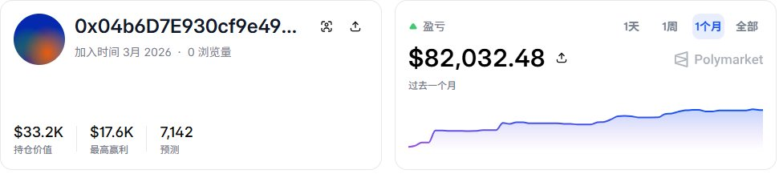

沐安ねこ
@show5560
@kan02933606 回一下）

Mercury
@kan02933606
你还记得那个照着Anthropic指南，21天把1,092美元滚成83,157美元的家伙吗
他交易BTC 5分钟市场，一天下300多单。三周干了6,263笔交易。
实盘账号：https://t.co/lfHZekYYKh
放到今天之前，想跟这种人的单根本不可能——交易太多，速度太快。
现在不一样了： https://t.co/FwKlA2O113